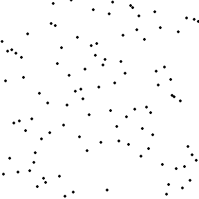
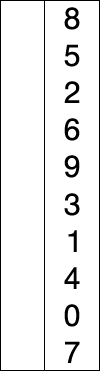

C Sorting Algorithm
Bubble Sort
Bubble Sort (English: Bubble Sort) is a simple sorting algorithm. It repeatedly steps through the list to be sorted, comparing two elements at a time, and swaps them if they are in the wrong order (such as from largest to smallest, or first letter from A to Z).
Process demonstration:

Example
#include <stdio.h>
void bubble_sort(int arr[], int len);
int main() {
int arr[] = { 22, 34, 3, 32, 82, 55, 89, 50, 37, 5, 64, 35, 9, 70 };
int len = sizeof(arr) / sizeof(arr[0]);
bubble_sort(arr, len);
for (int i = 0; i < len; i++) {
printf("%d ", arr[i]);
}
return 0;
}
void bubble_sort(int arr[], int len) {
for (int i = 0; i < len - 1; i++) {
for (int j = 0; j < len - 1 - i; j++) {
if (arr[j] > arr[j + 1]) {
int temp = arr[j];
arr[j] = arr[j + 1];
arr[j + 1] = temp;
}
}
}
}
Selection Sort
Selection sort is a simple and intuitive sorting algorithm. Its working principle is as follows. First, find the smallest (or largest) element in the unsorted sequence and place it at the beginning of the sorted sequence. Then, continue to find the smallest (or largest) element from the remaining unsorted elements and place it at the end of the sorted sequence. And so on, until all elements are sorted.
Process demonstration:


Example
#include <stdio.h>
void selection_sort(int a[], int len);
int main() {
int arr[] = { 22, 34, 3, 32, 82, 55, 89, 50, 37, 5, 64, 35, 9, 70 };
int len = sizeof(arr) / sizeof(arr[0]);
selection_sort(arr, len);
for (int i = 0; i < len; i++) {
printf("%d ", arr[i]);
}
return 0;
}
void selection_sort(int a[], int len) {
for (int i = 0; i < len - 1; i++) {
int min = i;
for (int j = i + 1; j < len; j++) {
if (a[j] < a[min]) {
min = j;
}
}
if (min != i) {
int temp = a[min];
a[min] = a[i];
a[i] = temp;
}
}
}
Insertion Sort
Insertion Sort (English: Insertion Sort) is a simple and intuitive sorting algorithm. Its working principle is to build an ordered sequence. For unsorted data, scan from back to front in the sorted sequence, find the appropriate position, and insert it. In implementation, insertion sort usually adopts in-place sorting (that is, sorting that only requires {\displaystyle O(1)} {\displaystyle O(1)} extra space). Therefore, during the back-to-front scanning process, it is necessary to repeatedly move the sorted elements backward step by step.
Shift to make room for the latest element.
Process demonstration:

Example
#include <stdio.h>
void insertion_sort(int arr[], int len);
int main() {
int arr[] = { 22, 34, 3, 32, 82, 55, 89, 50, 37, 5, 64, 35, 9, 70 };
int len = sizeof(arr) / sizeof(arr[0]);
insertion_sort(arr, len);
for (int i = 0; i < len; i++) {
printf("%d ", arr[i]);
}
return 0;
}
void insertion_sort(int arr[], int len) {
for (int i = 1; i < len; i++) {
int temp = arr[i];
int j = i;
while (j > 0 && arr[j - 1] > temp) {
arr[j] = arr[j - 1];
j--;
}
arr[j] = temp;
}
}
Shell Sort
Shell sort, also known as the decreasing increment sorting algorithm, is a more efficient improved version of insertion sort. Shell sort is an unstable sorting algorithm.
Shell sort proposes improvements based on the following two properties of insertion sort:
- Insertion sort is highly efficient when operating on data that is almost already sorted, and can achieve the efficiency of linear sorting.
- But insertion sort is generally inefficient, because insertion sort can only move data one position at a time.
Process demonstration:

Example
#include <stdio.h>
void shell_sort(int arr[], int len);
int main() {
int arr[] = { 22, 34, 3, 32, 82, 55, 89, 50, 37, 5, 64, 35, 9, 70 };
int len = sizeof(arr) / sizeof(arr[0]);
shell_sort(arr, len);
for (int i = 0; i < len; i++) {
printf("%d ", arr[i]);
}
return 0;
}
void shell_sort(int arr[], int len) {
for (int gap = len / 2; gap > 0; gap /= 2) {
for (int i = gap; i < len; i++) {
int temp = arr[i];
int j = i;
while (j >= gap && arr[j - gap] > temp) {
arr[j] = arr[j - gap];
j -= gap;
}
arr[j] = temp;
}
}
}
Merge Sort
Divide the data into two segments, and from the two segments select the smallest element one by one and move it to the end of the new data segment.
Can be done from top to bottom or from bottom to top.
Process demonstration:


Iterative method
#include <stdio.h>
#include <stdlib.h>
int min(int x, int y);
void merge_sort(int arr[], int len);
int main() {
int arr[] = { 22, 34, 3, 32, 82, 55, 89, 50, 37, 5, 64, 35, 9, 70 };
int len = sizeof(arr) / sizeof(arr[0]);
merge_sort(arr, len);
for (int i = 0; i < len; i++) {
printf("%d ", arr[i]);
}
return 0;
}
int min(int x, int y) {
return x < y ? x : y;
}
void merge_sort(int arr[], int len) {
int* a = arr;
int* b = (int*) malloc(len * sizeof(int));
if (b == NULL) {
fprintf(stderr, "Memory allocation failed\n");
exit(EXIT_FAILURE);
}
for (int seg = 1; seg < len; seg += seg) {
for (int start = 0; start < len; start += seg + seg) {
int low = start;
int mid = min(start + seg, len);
int high = min(start + seg + seg, len);
int k = low;
int start1 = low, end1 = mid;
int start2 = mid, end2 = high;
while (start1 < end1 && start2 < end2) {
b[k++] = a[start1] < a[start2] ? a[start1++] : a[start2++];
}
while (start1 < end1) {
b[k++] = a[start1++];
}
while (start2 < end2) {
b[k++] = a[start2++];
}
}
int* temp = a;
a = b;
b = temp;
}
if (a != arr) {
for (int i = 0; i < len; i++) {
b[i] = a[i];
}
b = a;
}
free(b);
}
Recursive method
#include <stdio.h>
#include <stdlib.h>
#include <string.h>
void merge_sort_recursive(int arr[], int reg[], int start, int end);
void merge_sort(int arr[], const int len);
int main() {
int arr[] = { 22, 34, 3, 32, 82, 55, 89, 50, 37, 5, 64, 35, 9, 70 };
int len = sizeof(arr) / sizeof(arr[0]);
merge_sort(arr, len);
for (int i = 0; i < len; i++) {
printf("%d ", arr[i]);
}
return 0;
}
void merge_sort_recursive(int arr[], int reg[], int start, int end) {
if (start >= end)
return;
int mid = start + (end - start) / 2;
int start1 = start, end1 = mid;
int start2 = mid + 1, end2 = end;
merge_sort_recursive(arr, reg, start1, end1);
merge_sort_recursive(arr, reg, start2, end2);
int k = start;
while (start1 <= end1 && start2 <= end2) {
reg[k++] = arr[start1] < arr[start2] ? arr[start1++] : arr[start2++];
}
while (start1 <= end1) {
reg[k++] = arr[start1++];
}
while (start2 <= end2) {
reg[k++] = arr[start2++];
}
memcpy(arr + start, reg + start, (end - start + 1) * sizeof(int));
}
void merge_sort(int arr[], const int len) {
int* reg = (int*)malloc(len * sizeof(int));
if (reg == NULL) {
fprintf(stderr, "Memory allocation failed\n");
exit(EXIT_FAILURE);
}
merge_sort_recursive(arr, reg, 0, len - 1);
free(reg);
}
Quicksort
Randomly pick an element in the interval as a pivot, place elements smaller than the pivot before the pivot, and elements greater than the pivot after the pivot, then sort the small-element area and the large-element area separately.
Process demonstration:

Iterative method
#include <stdio.h>
typedef struct _Range {
int start, end;
} Range;
Range new_Range(int s, int e) {
Range r;
r.start = s;
r.end = e;
return r;
}
void swap(int *x, int *y) {
int t = *x;
*x = *y;
*y = t;
}
void quick_sort(int arr[], const int len) {
if (len <= 0)
return;
Range r[len];
int p = 0;
r[p++] = new_Range(0, len - 1);
while (p > 0) {
Range range = r[--p];
if (range.start >= range.end)
continue;
int mid = arr[(range.start + range.end) / 2];
int left = range.start, right = range.end;
do {
while (arr[left] < mid) ++left;
while (arr[right] > mid) --right;
if (left <= right) {
swap(&arr[left], &arr[right]);
left++;
right--;
}
} while (left <= right);
if (range.start < right) r[p++] = new_Range(range.start, right);
if (range.end > left) r[p++] = new_Range(left, range.end);
}
}
int main() {
int arr[] = {22, 34, 3, 32, 82, 55, 89, 50, 37, 5, 64, 35, 9, 70};
int len = sizeof(arr) / sizeof(arr[0]);
quick_sort(arr, len);
for (int i = 0; i < len; i++) {
printf("%d ", arr[i]);
}
return 0;
}
Recursive method
#include <stdio.h>
void swap(int *x, int *y) {
int t = *x;
*x = *y;
*y = t;
}
void quick_sort_recursive(int arr[], int start, int end) {
if (start >= end)
return;
int mid = arr[end];
int left = start, right = end - 1;
while (left < right) {
while (left < right && arr[left] < mid)
left++;
while (left < right && arr[right] >= mid)
right--;
swap(&arr[left], &arr[right]);
}
if (arr[left] >= arr[end])
swap(&arr[left], &arr[end]);
else
left++;
quick_sort_recursive(arr, start, left - 1);
quick_sort_recursive(arr, left + 1, end);
}
void quick_sort(int arr[], int len) {
quick_sort_recursive(arr, 0, len - 1);
}
int main() {
int arr[] = {22, 34, 3, 32, 82, 55, 89, 50, 37, 5, 64, 35, 9, 70};
int len = sizeof(arr) / sizeof(arr[0]);
quick_sort(arr, len);
for (int i = 0; i < len; i++) {
printf("%d ", arr[i]);
}
return 0;
}
other extensions